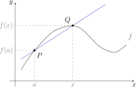
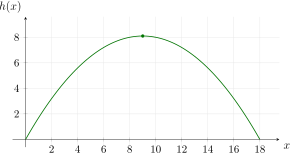
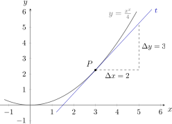
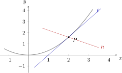
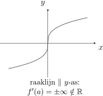
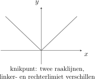
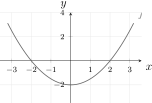
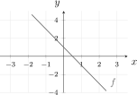
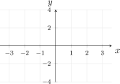
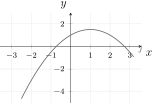

Hoofdstuk 16Afgeleiden
Leerplandoelstellingen (GO! Navigator)
Basisvorming (BV3_06)
-
• BV3_06.03 (MD 06.03) De leerlingen interpreteren de afgeleide als limiet van een differentiequotiënt en als richtingscoëfficiënt van de raaklijn aan de grafiek.
-
• BV3_06.04 (MD 06.04) De leerlingen leggen grafisch het verband tussen een functie en haar afgeleide functie.
Gevorderde wiskunde (WD3_06.08)
-
• WD3_06.08.27 De leerlingen definiëren afgeleide in een punt en afgeleide functie.
-
– afbakening: verband tussen continuı̈teit en afleidbaarheid
-
-
• WD3_06.08.28 De leerlingen berekenen de afgeleide functie van functies die zijn opgebouwd uit veeltermfuncties, rationale functies, irrationale functies, exponentiële functies, logaritmische functies, goniometrische functies en cyclometrische functies.
-
– afbakening: afleidbaarheid
-
– afbakening: rekenregels: afgeleide van een som, product, quotiënt van functies en afgeleide van een samengestelde functie (kettingregel)
-
– afbakening: regel van de l’Hôpital
-
– WD3_06.08.28.01 (MD 06.08.17) De leerlingen berekenen de afgeleide functie van functies die zijn opgebouwd uit veeltermfuncties, rationale functies, irrationale functies, exponentiële functies, logaritmische functies en goniometrische functies.
-
– WD3_06.08.28.02 De leerlingen berekenen de afgeleide functie van functies die zijn opgebouwd uit cyclometrische functies.
-
I Inleiding
1 Van rechte \(PQ\) naar het verloop van \(f\)
Beschouw een functie \(f\), een vast punt \(P\bigl (a,f(a)\bigr )\) op de grafiek en een variabel punt \(Q\bigl (x,f(x)\bigr )\).

De rechte \(PQ\) geeft ons een idee van het verloop van \(f\) tussen \(a\) en \(x\): stijgen, dalen, een maximum of een minimum. Hoe dichter we \(P\) en \(Q\) bij elkaar leggen, hoe beter die rechte het gedrag van \(f\) in de buurt van \(a\) beschrijft.
2 Inleidend voorbeeld: hellingspercentage
Een helling van \(10\%\) betekent
\[ \frac {10}{100} = \frac {\text {verticale toename}}{\text {horizontale toename}} = \tan \alpha = 0.1 \qquad \Rightarrow \qquad \alpha = 5\degree 42' 38''. \]
Een hellingspercentage is dus niets anders dan de richtingscoëfficiënt van een rechte.
3 Inleidend voorbeeld: skivakantie
Jonas en Lise zijn op skivakantie. De top van de heuvel en zijn omgeving zijn parabolisch en worden beschreven door
\[ h(x) = 0.1\,(18x - x^2). \]
De nulwaarden zijn \(x=0\) en \(x=18\), de top ligt bij \(x = -\dfrac {b}{2a} = \dfrac {-1.8}{-0.2} = 9\), met \(h(9) = 8.1\).

We onderzoeken de gemiddelde helling tussen \(x=0\) en \(x=9\):
\[ \frac {\text {verticale toename}}{\text {horizontale toename}} = \frac {\Delta h}{\Delta x} = \frac {8.1}{9} = 0.9 = 90\%, \qquad \tan \alpha = 0.9 \quad \Rightarrow \quad \alpha = 41\degree 59' 14''. \]
Die gemiddelde helling zegt echter weinig over één bepaalde plaats op de heuvel, want ze verandert voortdurend:
\[ \begin {array}{c|c|c} \text {interval} & \dfrac {\Delta h}{\Delta x} = \tan \alpha & \alpha \\[0.8em] \hline \rule {0pt}{1.1em}[0,2] & \dfrac {h(2)-h(0)}{2-0} = 1.6 & 57\degree 59' 41'' \\[0.8em] \left [2,4\right ] & \dfrac {5.6-3.2}{4-2} = 1.2 & 50\degree 11' 40'' \\[0.8em] \left [4,6\right ] & 0.8 & 38\degree 39' 35'' \\[0.8em] \left [6,8\right ] & 0.4 & 21\degree 48' 5'' \end {array} \]
Willen we de helling in één punt kennen, dan laten we de twee punten heel dicht naar elkaar toe gaan. We nemen dus een limiet.
De tabel berekenen met lijsten op het GRM
Met lijsten rekent de TI-84 alle intervallen van de tabel in één keer uit.
-
• Zet het toestel in graden: druk mode, ga met de pijltjes naar DEGREE en druk enter.
-
• Voer bij y= het voorschrift in:
\[ Y_1 = 0.1\,(18X - X^2). \]
-
• Open de lijsteditor met stat 1:Edit... en typ in L1 de grenzen van de intervallen: \(0\), \(2\), \(4\), \(6\), \(8\).
-
• Zet de cursor op de naam L2 bovenaan, typ Y1(L1) en druk enter. Je vindt Y1 onder vars ▶ 1:Function... 1:Y1 en L1 onder 2ndL11. Zo krijgt L2 de hoogtes \(0\), \(3.2\), \(5.6\), \(7.2\), \(8\).
-
• Zet de cursor op de naam L3 en typ ΔList(L2)/ΔList(L1). De opdracht ΔList( vind je onder 2ndliststat ▶ 7:ΔList(; ze neemt de verschillen van opeenvolgende elementen. L3 bevat dan de gemiddelde hellingen \(1.6\), \(1.2\), \(0.8\), \(0.4\).
-
• Zet de cursor op de naam L4 en typ tan⁻¹(L3), met 2ndtan⁻¹tan. L4 bevat dan de hellingshoeken in graden.
-
• Wil je een hoek in graden, minuten en seconden, ga dan met 2ndquitmode naar het rekenscherm en typ L4(1)►DMS. De opdracht ►DMS staat onder 2ndangleapps 4:►DMS.
Afgerond is dat de \(57\degree 59' 41''\) uit de tabel.
Kies je in L1 kleinere stappen, bijvoorbeeld \(8\), \(8.5\), \(9\), dan zie je meteen hoe de gemiddelde helling verandert als de punten dichter bij elkaar liggen.
De tabel berekenen met Python
Met een lus rekent Python alle intervallen van de tabel in één keer uit.
-
• Schrijf het voorschrift als een functie. Een macht schrijf je in Python met **, dus \(x^2\) wordt x**2.
def h(x):
return 0.1 * (18*x - x**2)-
• Zet de grenzen van de intervallen in een lijst. De lus loopt over elk interval \([a,b]\): grenzen[i] is het linkeruiteinde, grenzen[i + 1] het rechteruiteinde.
-
• De gemiddelde helling is het differentiequotiënt \(\dfrac {h(b)-h(a)}{b-a}\).
-
• atan geeft de hoek in radialen; degrees zet die om naar graden. Beide haal je uit de module math.
from math import atan, degrees
grenzen = [0, 2, 4, 6, 8]
for i in range(len(grenzen) - 1):
a = grenzen[i]
b = grenzen[i + 1]
helling = (h(b) - h(a)) / (b - a)
hoek = degrees(atan(helling))
print(a, b, round(helling, 1), round(hoek, 3))0 2 1.6 57.995
2 4 1.2 50.194
4 6 0.8 38.66
6 8 0.4 21.801-
• Wil je een hoek in graden, minuten en seconden, schrijf daar dan een functie voor. Het deel na de komma maal \(60\) geeft de minuten; wat daarna overblijft, maal \(3600\), de seconden.
def dms(hoek):
graden = int(hoek)
minuten = int((hoek - graden) * 60)
seconden = (hoek - graden - minuten / 60) * 3600
return graden, minuten, round(seconden, 2)
print(dms(degrees(atan(1.6))))(57, 59, 40.62)Afgerond is dat de \(57\degree 59' 41''\) uit de tabel.
Kies je kleinere stappen, bijvoorbeeld grenzen = [8, 8.5, 9], dan zie je meteen hoe de gemiddelde helling verandert als de punten dichter bij elkaar liggen.
II Definities
1 Differentiequotiënt
Zij \(f\) een functie en \(a \in \dom f\).
-
• \(x - a = \Delta x\) is de toename, aangroeiing of differentie van \(x\) in \(a\);
-
• \(f(x) - f(a) = \Delta f\) is de toename van \(f\) in \(a\);
-
• het quotiënt
\[ \frac {f(x)-f(a)}{x-a} = \left (\frac {\Delta f}{\Delta x}\right )_{\!a} \]
heet het differentiequotiënt van \(f\) in \(a\).
2 Afgeleid getal
Als de limiet in \(a\) van het differentiequotiënt van \(f\) bestaat en een reëel getal is (dus verschillend van \(\pm \infty \)), dan noemen we die limiet het afgeleid getal van \(f\) in \(a\):
\[ \boxed {\;f'(a) = \lim _{x\to a} \frac {f(x)-f(a)}{x-a} \in \R \;} \]
We zeggen dan dat \(f\) afleidbaar is in \(a\). Andere notaties voor hetzelfde getal zijn
\[ f'(a) = Df(a) = \frac {df}{dx}(a) \qquad \text {(die laatste vooral in de fysica)}. \]
Met \(x = a + \Delta x\) krijg je de even gebruikelijke schrijfwijze
\[ f'(a) = \lim _{\Delta x \to 0} \frac {f(a+\Delta x)-f(a)}{\Delta x}. \]
3 Voorbeeld
Voor \(f(x) = \dfrac {x^2}{4}\) en \(a = 3\) is \(f(3) = \dfrac {9}{4}\), zodat
\(\seteqnumber{0}{}{0}\)\begin{align*} f'(3) &= \lim _{x\to 3} \frac {f(x)-f(3)}{x-3} \\ &= \lim _{x\to 3} \frac {\frac {x^2}{4}-\frac {9}{4}}{x-3} \\ &= \lim _{x\to 3} \frac {(x-3)(x+3)}{4(x-3)} \\ &= \lim _{x\to 3} \frac {x+3}{4} \\ &= \frac {6}{4} = 1.5. \end{align*} Merk op dat het differentiequotiënt de onbepaalde vorm \(\vov {\frac {0}{0}}\) oplevert: dat is bij een afgeleide altijd zo, en juist daarom moeten we eerst vereenvoudigen.
Grafisch is \(f'(3) = 1.5\) de helling van de grafiek in het punt \(P\bigl (3,\frac {9}{4}\bigr )\): de raaklijn in \(P\) stijgt \(3\) eenheden wanneer \(x\) met \(2\) toeneemt.

Het afgeleid getal op het GRM
De TI-84 berekent een afgeleid getal numeriek: hij rekent een differentiequotiënt uit over een heel klein interval rond \(a\). Dat is een goede controle van je berekening, maar geen vervanging ervan.
-
• Voer bij y= het voorschrift in:
\[ Y_1 = X^2/4. \]
-
• Ga met 2ndquitmode naar het rekenscherm en kies math 8:nDeriv(.
-
• In de stand MATHPRINT verschijnt een sjabloon \(\frac {d}{d\square }(\square )\big |_{\square =\square }\). Vul X als veranderlijke, 3 als waarde van \(x\) en Y1 als functie in. Y1 vind je onder vars ▶ 1:Function... 1:Y1. Druk enter: het toestel geeft 1.5. In de stand CLASSIC typ je alles na elkaar:
Ook in de grafiek kan het.
-
• Druk graph en kies 2ndcalctrace 6:dy/dx.
-
• Typ 3 en druk enter. De cursor springt naar het punt \(P\bigl (3,\frac {9}{4}\bigr )\) en onderaan verschijnt dy/dx=1.5.
Het afgeleid getal met Python
De bibliotheek sympy rekent met formules in plaats van met getallen. Ze kan een limiet uitrekenen, dus kan ze het afgeleid getal rechtstreeks uit de definitie bepalen. Dat is een goede controle van je berekening, maar geen vervanging ervan.
-
• Schrijf het voorschrift als een functie, zoals hierboven. Dan mag je in Python net als op papier \(f(a)\) schrijven.
-
• Zeg met symbols dat x een veranderlijke is. Zo mag ook \(f(x)\), met een formule als resultaat in plaats van een getal.
from sympy import symbols, limit
def f(x):
return x**2 / 4
x = symbols('x')
a = 3
print(f(a))
print((f(x) - f(a)) / (x - a))2.25
(x**2/4 - 2.25)/(x - 3)Het differentiequotiënt \(\dfrac {f(x)-f(a)}{x-a}\) schrijf je dus letterlijk zo op.
-
• limit(uitdrukking, x, a) berekent \(\lim _{x\to a}\) van die uitdrukking. Met float eromheen krijg je een kommagetal.
m = float(limit((f(x) - f(a)) / (x - a), x, a))
print(m)1.5Python vindt dus \(f'(3) = 1.5\), hetzelfde als hierboven. Verander je a, dan krijg je het afgeleid getal in een ander punt.
4 Oefeningen
Oefening 1
Bereken met de definitie het afgeleid getal.
-
(a) \(f(x) = x^2\) in \(a=-1\)
-
(b) \(f(x) = \sqrt {x+1}\) in \(a=3\)
-
(c) \(f(x) = \dfrac {1}{x}\) in \(a=-2\)
-
(d) \(f(x) = x^3\) in een willekeurige \(a\)
-
(a) \(\displaystyle f'(-1) = \lim _{x\to -1}\frac {x^2-1}{x+1} = \lim _{x\to -1}(x-1) = -2\).
-
(b) \(\displaystyle f'(3) = \lim _{x\to 3}\frac {\sqrt {x+1}-2}{x-3} = \lim _{x\to 3}\frac {x-3}{(x-3)\bigl (\sqrt {x+1}+2\bigr )} = \frac {1}{4}\).
-
(c) \(\displaystyle f'(-2) = \lim _{x\to -2}\frac {\frac {1}{x}+\frac {1}{2}}{x+2} = \lim _{x\to -2}\frac {2+x}{2x(x+2)} = \lim _{x\to -2}\frac {1}{2x} = -\frac {1}{4}\).
-
(d) \(\displaystyle f'(a) = \lim _{x\to a}\frac {x^3-a^3}{x-a} = \lim _{x\to a}(x^2+ax+a^2) = 3a^2\).
III Meetkundige betekenis
1 Besluit
Het differentiequotiënt is de richtingscoëfficiënt van de rechte \(PQ\):
\[ \left (\frac {\Delta f}{\Delta x}\right )_{\!a} = \frac {f(x)-f(a)}{x-a} = \text {rico van } PQ. \]
Laten we \(Q\) naderen tot \(P\), dus \(x \to a\), dan nadert de rechte \(PQ\) tot haar limietstand \(t\), waarin \(P\) en \(Q\) samenvallen. Die rechte \(t\) is de raaklijn aan de grafiek van \(f\) in \(P\). Bijgevolg:
\[ \boxed {\;f'(a) = \text {rico van de raaklijn aan } y=f(x) \text { in } P\bigl (a,f(a)\bigr ).\;} \]

2 Gevolgen
De raaklijn in \(P\bigl (a,f(a)\bigr )\) heeft als vergelijking
\[ \boxed {\; t \leftrightarrow y - f(a) = f'(a)\,(x-a) \;} \]
De normaal in \(P\) is de rechte door \(P\) die loodrecht staat op \(t\). Omdat voor loodrechte rechten \(m_1 \cdot m_2 = -1\), wordt dat
\[ \boxed {\; n \leftrightarrow y - f(a) = \frac {-1}{f'(a)}\,(x-a) \;} \qquad \text {(op voorwaarde dat } f'(a) \neq 0\text {)}. \]
Is \(f'(a) = 0\), dan is \(t\) horizontaal en is de normaal de verticale rechte \(x = a\).
3 Voorbeeld
Bepaal de raaklijn en de normaal aan \(y = 2x^2-2x+5\) in het punt met \(x\)-coördinaat \(0\).
Eerst \(f(0) = 5\), daarna het afgeleid getal:
\(\seteqnumber{0}{}{0}\)\begin{align*} f'(0) &= \lim _{x\to 0} \frac {2x^2-2x+5-5}{x-0} \\ &= \lim _{x\to 0} \frac {x(2x-2)}{x} \\ &= \lim _{x\to 0} (2x-2) = -2. \end{align*} Dus
\[ \begin {aligned} t \leftrightarrow y - 5 &= -2(x-0) \\ &\iff 2x+y-5 = 0, \end {aligned} \qquad \begin {aligned} n \leftrightarrow y - 5 &= \frac {1}{2}(x-0) \\ &\iff x-2y+10 = 0. \end {aligned} \]
4 Oefeningen
Oefening 2
Bepaal telkens de vergelijking van de raaklijn en van de normaal.
-
(a) \(y = \dfrac {4x-2}{x}\) in het punt met \(x\)-coördinaat \(2\)
\(t \leftrightarrow x-2y+4 = 0\) en \(n \leftrightarrow 2x+y-7 = 0\) \(f(2) = 3\) en
\[ f'(2) = \lim _{x\to 2}\frac {\frac {4x-2}{x}-3}{x-2} = \lim _{x\to 2}\frac {4x-2-3x}{x(x-2)} = \lim _{x\to 2}\frac {1}{x} = \frac {1}{2}. \]
Dus \(t \leftrightarrow x-2y+4 = 0\) en \(n \leftrightarrow 2x+y-7 = 0\).
-
(b) \(y = \sqrt [3]{9-x^3}\) in het punt waar \(f(a) = 2\)
\(t \leftrightarrow x+4y-9 = 0\) en \(n \leftrightarrow 4x-y-2 = 0\) Uit \(\sqrt [3]{9-a^3} = 2\) volgt \(a = 1\). Met de worteltoegevoegde van een derdemachtswortel,
\[ \begin {aligned} f'(1) &= \lim _{x\to 1}\frac {\sqrt [3]{9-x^3}-2}{x-1} \\ &= \lim _{x\to 1}\frac {9-x^3-8}{(x-1)\Bigl (\sqrt [3]{(9-x^3)^2} + 2\sqrt [3]{9-x^3} + 4\Bigr )} = \frac {-3}{12} = -\frac {1}{4}. \end {aligned} \]
Dus \(t \leftrightarrow x+4y-9 = 0\) en \(n \leftrightarrow 4x-y-2 = 0\).
IV Afleidbaarheid en continuı̈teit
1 Stelling
Als een functie \(f\) afleidbaar is in \(a\), dan is \(f\) continu in \(a\).
2 Bewijs
\(f'(a)\) bestaat
\(\seteqnumber{0}{}{0}\)\begin{align*} \Rightarrow \qquad f'(a) &= \lim _{x\to a}\frac {f(x)-f(a)}{x-a} \\ &= \frac {\displaystyle \lim _{x\to a}\bigl (f(x)-f(a)\bigr )} {\displaystyle \lim _{x\to a}(x-a)} \in \R . \end{align*}
\(\seteqnumber{0}{}{0}\)\begin{align*} N &= \lim _{x\to a}(x-a) = 0 \\ \text {Veronderstel } T &= \lim _{x\to a}\bigl (f(x)-f(a)\bigr ) \neq 0 \\ &\Rightarrow \qquad \frac {T}{N} \text { is van de vorm } \frac {k}{0} = \pm \infty \notin \R \quad \lightning \quad f'(a) \in \R \\ &\Rightarrow \qquad \lim _{x\to a}\bigl (f(x)-f(a)\bigr ) = 0 \\ &\Rightarrow \qquad \underbrace {\lim _{x\to a} f(x) = f(a)}_{\text {hoofdeigenschap continuïteit}} \qed \end{align*}
Omgekeerd werkt dit niet. Is \(f\) continu in \(a\), dan is \(T = 0\), en \(\frac {T}{N}\) wordt de onbepaalde vorm \(\vov {\frac {0}{0}}\). Die kan een reëel getal opleveren, maar ook \(\pm \infty \) of een linker- en rechterlimiet die verschillen.
3 Gevolgen
-
• Is \(f\) niet continu in \(a\), dan is \(f\) zeker niet afleidbaar in \(a\).
-
• Is \(f\) wel continu in \(a\), dan zijn er twee mogelijkheden: \(f'(a)\) bestaat, of \(f'(a)\) bestaat niet. Continuı̈teit is dus nodig, maar niet voldoende.
Twee typische gevallen van een continue functie die niet afleidbaar is:


4 Voorbeeld
De functie \(f(x) = |x|\) is continu in \(0\), maar
\[ \lim _{x \underset {<}{\to } 0} \frac {|x|-0}{x-0} = -1 \qquad \text {en}\qquad \lim _{x \underset {>}{\to } 0} \frac {|x|-0}{x-0} = +1 . \]
De linker- en de rechterlimiet verschillen, dus bestaat de limiet niet en is \(f\) niet afleidbaar in \(0\).
V De afgeleide functie
1 Inleiding
Neem \(f(x) = x^2+2x-3\) en bereken \(f'(a)\) voor een willekeurige \(a\):
\(\seteqnumber{0}{}{0}\)\begin{align*} f'(a) &= \lim _{x\to a}\frac {f(x)-f(a)}{x-a} \\ &= \lim _{x\to a}\frac {x^2+2x-3-a^2-2a+3}{x-a} \\ &= \lim _{x\to a}\frac {x^2-a^2+2x-2a}{x-a} \\ &= \lim _{x\to a}\frac {(x-a)(x+a+2)}{x-a} \\ &= 2a+2. \end{align*} Die \(a\) was willekeurig in \(\dom f\), dus mag ze \(x\) heten:
\[f'(x) = 2x + 2\]
Zo wordt bereken van afgeleide waarde:
\[f'(3) = 8,\quad f'(1) = 4,\quad \ldots \]
2 Definitie
De reële functie \(f'\) die elk reëel getal \(x\) afbeeldt op het afgeleid getal van \(f\) in \(x\) noemen we de afgeleide functie van \(f\):
\[ \boxed {\;f' : \R \to \R : x \mapsto f'(x)\;} \]
Voor het voorbeeld hierboven is dus \(f'(x) = 2x+2\).
Onder de grafiek van \(f\) tekenen we bij elke \(x\) de richtingscoëfficiënt van de raaklijn als het punt \(\bigl (x, f'(x)\bigr )\). Samen vormen die punten de grafiek van \(f'\): een rechte, want \(f'(x) = 2x+2\).

3 Oefeningen
Oefening 3
Links staat telkens de grafiek van een functie \(f\). Lees in enkele punten de richtingscoëfficiënt van de raaklijn af en schets daarmee rechts de grafiek van de afgeleide functie \(f'\).
-
(a) \(f(x) = \dfrac {1}{2}x^2-2\)


Teken met de vinger of de muis de grafiek van \(f'\) in het rooster en druk daarna op Controleer. -
(b) \(f(x) = -2x+1\)


Teken met de vinger of de muis de grafiek van \(f'\) in het rooster en druk daarna op Controleer. -
(c) \(f(x) = \dfrac {1}{3}x^3-x\)


Teken met de vinger of de muis de grafiek van \(f'\) in het rooster en druk daarna op Controleer. -
(d) \(f(x) = -\dfrac {1}{2}x^2+x+1\)


Teken met de vinger of de muis de grafiek van \(f'\) in het rooster en druk daarna op Controleer.
VI Rekenregels
Telkens \(f\) en \(g\) afleidbare functies, \(c \in \R \) en \(n \in \N _0\).
1 Afgeleide van een constante functie
Voor \(f(x) = c\) met \(c \in \R \):
\[ f'(a) = \lim _{x\to a}\frac {c-c}{x-a} = 0 \qquad \Longrightarrow \qquad \boxed {\;c' = Dc = 0\;} \]
2 Afgeleide van de identieke functie
Voor \(f(x) = x\):
\[ f'(a) = \lim _{x\to a}\frac {x-a}{x-a} = 1 \qquad \Longrightarrow \qquad \boxed {\;x' = Dx = 1\;} \]
3 Afgeleide van een som
\[ \begin {aligned} (f+g)'(a) &= \lim _{x\to a}\frac {(f+g)(x)-(f+g)(a)}{x-a} \\ &= \lim _{x\to a}\frac {f(x)+g(x)-f(a)-g(a)}{x-a} \\ &= \lim _{x\to a}\frac {f(x)-f(a)}{x-a} + \lim _{x\to a}\frac {g(x)-g(a)}{x-a} \\ &= f'(a)+g'(a) \end {aligned} \]
\[ \boxed {\;(f \pm g)' = f' \pm g'\;} \]
4 Afgeleide van een product
\[ \begin {aligned} (f\cdot g)'(a) &= \lim _{x\to a}\frac {(f\cdot g)(x)-(f\cdot g)(a)}{x-a} \\ &= \lim _{x\to a} \frac {f(x)g(x) - f(a)g(x) + f(a)g(x) - f(a)g(a)}{x-a} \\ &= \lim _{x\to a}\left (\frac {f(x)-f(a)}{x-a}\cdot g(x)\right ) + \lim _{x\to a}\left (f(a)\cdot \frac {g(x)-g(a)}{x-a}\right ) \\ &= f'(a)\,g(a) + f(a)\,g'(a) \end {aligned} \]
\[ \boxed {\;(f\cdot g)' = f'\cdot g + f\cdot g'\;} \]
In de derde stap gebruiken we \(\lim \limits _{x\to a} g(x) = g(a)\): dat mag, want \(g\) is afleidbaar en dus continu in \(a\).
5 Afgeleide van een constante maal een functie
\[ (c\cdot f)' = c'\cdot f + c\cdot f' = 0\cdot f + c\cdot f' \qquad \Longrightarrow \qquad \boxed {\;(c\cdot f)' = c\cdot f' \quad (c\in \R )\;} \]
6 Afgeleide van een macht
\[ \begin {aligned} (f^n)' &= \bigl (f\cdot f^{n-1}\bigr )' = f'\cdot f^{n-1} + f\cdot \bigl (f^{n-1}\bigr )' \\ &= f'\cdot f^{n-1} + f\cdot \Bigl (f'\cdot f^{n-2} + f\cdot \bigl (f^{n-2}\bigr )'\Bigr ) \\ &= \underbrace {f'\cdot f^{n-1} + f'\cdot f^{n-1} + \cdots + f'\cdot f^{n-1}}_{n \text { termen}} \end {aligned} \]
\[ \boxed {\;\bigl (f^n\bigr )' = n\cdot f^{n-1}\cdot f'\;} \]
Bijzonder geval: een macht van \(x\)
\[ \bigl (x^n\bigr )' = n\cdot x^{n-1}\cdot \underbrace {x'}_{=1} \qquad \Longrightarrow \qquad \boxed {\;\bigl (x^n\bigr )' = n\cdot x^{n-1} \quad (n \in \N )\;} \]
Bijvoorbeeld \(\bigl (x^2\bigr )' = 2x\), \(\bigl (x^3\bigr )' = 3x^2\) en \(\bigl (x^{17}\bigr )' = 17x^{16}\).
7 Uitbreiding: rationale exponenten
Voor \(f(x) = \dfrac {1}{x}\):
\[ f'(a) = \lim _{x\to a}\frac {\frac {1}{x}-\frac {1}{a}}{x-a} = \lim _{x\to a}\frac {a-x}{ax(x-a)} = \lim _{x\to a}\frac {-1}{ax} = -\frac {1}{a^2} \qquad \Longrightarrow \qquad \boxed {\;\left (\frac {1}{x}\right )' = -\frac {1}{x^2}\;} \]
Merk op dat \(\left (\dfrac {1}{x}\right )' = \bigl (x^{-1}\bigr )' = -1\cdot x^{-2} = -\dfrac {1}{x^2}\): de formule blijft dus gelden voor negatieve machten.
Voor \(f(x) = \sqrt {x}\):
\[ f'(a) = \lim _{x\to a}\frac {\sqrt {x}-\sqrt {a}}{x-a} = \lim _{x\to a}\frac {x-a}{(x-a)\bigl (\sqrt {x}+\sqrt {a}\bigr )} = \frac {1}{2\sqrt {a}} \qquad \Longrightarrow \qquad \boxed {\;\bigl (\sqrt {x}\bigr )' = \frac {1}{2\sqrt {x}}\;} \]
Ook hier klopt de machtsformule: \(\bigl (\sqrt {x}\bigr )' = \bigl (x^{1/2}\bigr )' = \tfrac 12 x^{-1/2} = \dfrac {1}{2\sqrt {x}}\), dus ze geldt ook voor breuken. Algemeen:
\[ \boxed {\;\bigl (x^q\bigr )' = q\cdot x^{q-1} \quad \text {en}\quad \bigl (f^q\bigr )' = q\cdot f^{q-1}\cdot f' \qquad (q \in \Q )\;} \]
8 Afgeleide van een quotiënt
\[ \begin {aligned} \left (\frac {f}{g}\right )' &= \left (f\cdot \frac {1}{g}\right )' = f'\cdot \frac {1}{g} + f\cdot \left (\frac {1}{g}\right )' \\ &= f'\cdot \frac {1}{g} + f\cdot \frac {-1}{g^2}\cdot g' = \frac {f'\,g - f\,g'}{g^2} \end {aligned} \]
\[ \boxed {\;\left (\frac {f}{g}\right )' = \frac {f'\cdot g - f\cdot g'}{g^2}\;} \qquad \text {en in het bijzonder}\qquad \boxed {\;\left (\frac {1}{f}\right )' = \frac {-f'}{f^2}\;} \]
9 Afgeleide van een samengestelde functie: de kettingregel
\[ \begin {aligned} (g\circ f)'(a) &= \lim _{x\to a}\frac {(g\circ f)(x)-(g\circ f)(a)}{x-a} = \lim _{x\to a}\frac {g\bigl (f(x)\bigr )-g\bigl (f(a)\bigr )}{x-a} \\ &= \lim _{x\to a}\left ( \frac {g\bigl (f(x)\bigr )-g\bigl (f(a)\bigr )}{f(x)-f(a)} \cdot \frac {f(x)-f(a)}{x-a}\right ) \\ &= \lim _{y\to b}\frac {g(y)-g(b)}{y-b} \cdot f'(a) = g'(b)\cdot f'(a) = g'\bigl (f(a)\bigr )\cdot f'(a) \end {aligned} \]
Daarbij stelden we \(y = f(x)\) en \(b = f(a)\): als \(x \to a\), dan \(y \to b\), want \(f\) is afleidbaar en dus continu in \(a\).
\[ \boxed {\;(g\circ f)' = (g'\circ f)\cdot f' \qquad \text {of}\qquad \frac {dy}{dx} = \frac {dy}{dt}\cdot \frac {dt}{dx}\;} \]
Voorbeeld
Met \(x \overset {f}{\mapsto } x^2-1 \overset {g}{\mapsto } \sqrt {x^2-1}\):
\[ \left (\sqrt {x^2-1}\right )' = \frac {1}{2\sqrt {x^2-1}}\cdot \bigl (x^2-1\bigr )' = \frac {x}{\sqrt {x^2-1}} . \]
10 Overzicht van de rekenregels
\[ \begin {array}{ll} Dc = 0 & D(f\pm g) = Df \pm Dg \\[0.7em] Dx = 1 & D(f\cdot g) = Df\cdot g + f\cdot Dg \\[0.7em] Dx^{q} = q\cdot x^{q-1} \quad (q\in \Q ) & D\left (\dfrac
{f}{g}\right ) = \dfrac {Df\cdot g - f\cdot Dg}{g^2} \\[1.2em] D\dfrac {1}{x} = \dfrac {-1}{x^2} & D(c\cdot f) = c\cdot Df \\[1.2em] D\sqrt {x} = \dfrac {1}{2\sqrt {x}} & D\bigl
(f^{q}\bigr ) = q\cdot f^{q-1}\cdot Df \\[1.2em] & D\left (\dfrac {1}{f}\right ) = \dfrac {-Df}{f^2} \\[1.2em] & D(g\circ f) = (Dg \circ f)\cdot Df \end {array} \]
11 Oefeningen
Oefening 4
Bereken de afgeleide functie.
-
(a) \(f(x) = 2x^3-5x+1\)
\(f'(x) = 6x^2-5\)
\(\seteqnumber{0}{}{0}\)\begin{align*} f'(x) &= \bigl (2x^3-5x+1\bigr )'\\ &= 2\cdot 3x^2-5\cdot 1+0\\ &= 6x^2-5 \end{align*}
-
(b) \(f(x) = -4x^3 + 2\sqrt {3}\,x\)
\(f'(x) = -12x^2+2\sqrt {3}\)
\(\seteqnumber{0}{}{0}\)\begin{align*} f'(x) &= \bigl (-4x^3+2\sqrt {3}\,x\bigr )'\\ &= -4\cdot 3x^2+2\sqrt {3}\cdot 1\\ &= -12x^2+2\sqrt {3} \end{align*}
-
(c) \(f(x) = (5-x)(x+3)\)
\(f'(x) = 2-2x\)
\(\seteqnumber{0}{}{0}\)\begin{align*} f'(x) &= \bigl ((5-x)(x+3)\bigr )'\\ &= -1\cdot (x+3)+(5-x)\cdot 1\\ &= -x-3+5-x\\ &= 2-2x \end{align*}
-
(d) \(f(x) = 7x\,(3-x^2)\)
\(f'(x) = 21-21x^2\)
\(\seteqnumber{0}{}{0}\)\begin{align*} f'(x) &= \bigl (7x\,(3-x^2)\bigr )'\\ &= 7\cdot (3-x^2)+7x\cdot (-2x)\\ &= 21-7x^2-14x^2\\ &= 21-21x^2 \end{align*}
-
(e) \(f(x) = (x^2-2x)(2x-4)\)
\(f'(x) = 6x^2-16x+8\)
\(\seteqnumber{0}{}{0}\)\begin{align*} f'(x) &= \bigl ((x^2-2x)(2x-4)\bigr )'\\ &= (2x-2)(2x-4)+(x^2-2x)\cdot 2\\ &= 4x^2-12x+8+2x^2-4x\\ &= 6x^2-16x+8 \end{align*}
-
(f) \(f(x) = \dfrac {x-2}{3-x}\)
\(f'(x) = \dfrac {1}{(3-x)^2}\)
\(\seteqnumber{0}{}{0}\)\begin{align*} f'(x) &= \left (\frac {x-2}{3-x}\right )'\\ &= \frac {1\cdot (3-x)-(x-2)\cdot (-1)}{(3-x)^2}\\ &= \frac {3-x+x-2}{(3-x)^2}\\ &= \frac {1}{(3-x)^2} \end{align*}
-
(g) \(f(x) = \dfrac {x^3-2}{x^2}\)
\(f'(x) = \dfrac {x^3+4}{x^3}\)
\(\seteqnumber{0}{}{0}\)\begin{align*} f'(x) &= \left (\frac {x^3-2}{x^2}\right )'\\ &= \frac {3x^2\cdot x^2-(x^3-2)\cdot 2x}{x^4}\\ &= \frac {x^4+4x}{x^4}\\ &= \frac {x^3+4}{x^3} \end{align*}
-
(h) \(f(x) = \dfrac {-3}{4x^2}\)
\(f'(x) = \dfrac {3}{2x^3}\)
\(\seteqnumber{0}{}{0}\)\begin{align*} f'(x) &= \bigl (-\tfrac 34x^{-2}\bigr )'\\ &= -\tfrac 34\cdot (-2)x^{-3}\\ &= \frac {3}{2x^3} \end{align*}
Oefening 5
Bereken de afgeleide en vereenvoudig zo ver mogelijk.
-
(a) \(\bigl ((x^2-2x)^3\bigr )'\)
\(6x^2(x-1)(x-2)^2\)
\(\seteqnumber{0}{}{0}\)\begin{align*} \bigl ((x^2-2x)^3\bigr )' &= 3(x^2-2x)^2\cdot (x^2-2x)'\\ &= 3(x^2-2x)^2(2x-2)\\ &= 3x^2(x-2)^2\cdot 2(x-1)\\ &= 6x^2(x-1)(x-2)^2 \end{align*}
-
(b) \(\left (\sqrt {x^2-2x+5}\right )'\)
\(\dfrac {x-1}{\sqrt {x^2-2x+5}}\)
\(\seteqnumber{0}{}{0}\)\begin{align*} \left (\sqrt {x^2-2x+5}\right )' &= \frac {1}{2\sqrt {x^2-2x+5}}\cdot (x^2-2x+5)'\\ &= \frac {2x-2}{2\sqrt {x^2-2x+5}}\\ &= \frac {x-1}{\sqrt {x^2-2x+5}} \end{align*}
-
(c) \(\left (\dfrac {(x+1)^3}{(x-2)^2}\right )'\)
\(\dfrac {(x+1)^2(x-8)}{(x-2)^3}\)
\(\seteqnumber{0}{}{0}\)\begin{align*} \left (\frac {(x+1)^3}{(x-2)^2}\right )' &= \frac {3(x+1)^2(x-2)^2-(x+1)^3\cdot 2(x-2)}{(x-2)^4}\\ &= \frac {(x+1)^2(x-2)\bigl (3(x-2)-2(x+1)\bigr )}{(x-2)^4}\\ &= \frac {(x+1)^2(x-8)}{(x-2)^3} \end{align*}
-
(d) \(\left (\dfrac {-7}{(2-x)^3}\right )'\)
\(\dfrac {-21}{(2-x)^4}\)
\(\seteqnumber{0}{}{0}\)\begin{align*} \left (\frac {-7}{(2-x)^3}\right )' &= \bigl (-7(2-x)^{-3}\bigr )'\\ &= -7\cdot (-3)(2-x)^{-4}\cdot (-1)\\ &= \frac {-21}{(2-x)^4} \end{align*}
-
(e) \(\bigl ((3x^2-2x-5)^4\bigr )'\)
\(8(3x-1)(3x^2-2x-5)^3\)
\(\seteqnumber{0}{}{0}\)\begin{align*} \bigl ((3x^2-2x-5)^4\bigr )' &= 4(3x^2-2x-5)^3\cdot (3x^2-2x-5)'\\ &= 4(3x^2-2x-5)^3(6x-2)\\ &= 8(3x-1)(3x^2-2x-5)^3 \end{align*}
-
(f) \(\left (\sqrt [4]{3x^2-x+2}\right )'\)
\(\dfrac {6x-1}{4\sqrt [4]{(3x^2-x+2)^3}}\)
\(\seteqnumber{0}{}{0}\)\begin{align*} \left (\sqrt [4]{3x^2-x+2}\right )' &= \Bigl ((3x^2-x+2)^{\frac 14}\Bigr )'\\ &= \tfrac 14(3x^2-x+2)^{-\frac 34}\cdot (6x-1)\\ &= \frac {6x-1}{4\sqrt [4]{(3x^2-x+2)^3}} \end{align*}
-
(g) \(\left (\dfrac {x^2+5}{\sqrt {x^2+5}}\right )'\)
\(\dfrac {x}{\sqrt {x^2+5}}\)
\(\seteqnumber{0}{}{0}\)\begin{align*} \left (\frac {x^2+5}{\sqrt {x^2+5}}\right )' &= \left (\sqrt {x^2+5}\right )'\\ &= \frac {2x}{2\sqrt {x^2+5}}\\ &= \frac {x}{\sqrt {x^2+5}} \end{align*}
-
(h) \(\left ((3x-5)\sqrt {(1+2x)^3}\right )'\)
\(3\sqrt {1+2x}\,(5x-4)\)
\(\seteqnumber{0}{}{0}\)\begin{align*} \left ((3x-5)\sqrt {(1+2x)^3}\right )' &= \Bigl ((3x-5)(1+2x)^{\frac 32}\Bigr )'\\ &= 3(1+2x)^{\frac 32} + (3x-5)\cdot \tfrac 32(1+2x)^{\frac 12}\cdot 2\\ &= 3(1+2x)^{\frac 12}\bigl ((1+2x)+(3x-5)\bigr )\\ &= 3\sqrt {1+2x}\,(5x-4) \end{align*}
VII Hogere afgeleiden
1 Voorbeeld
Voor \(f(x) = 2x^4-2x^3+3x^2-3x+1\) vinden we
\[ \begin {aligned} f'(x) &= 8x^3-6x^2+6x-3, \\ f''(x) &= \bigl (f'(x)\bigr )' = 24x^2-12x+6, \\ f'''(x)&= \bigl (f''(x)\bigr )' = 48x-12, \quad \ldots \end {aligned} \]
De afgeleide van de afgeleide noemen we de tweede afgeleide, enzovoort:
\[ \begin {array}{lll} \text {1ste afgeleide} & f' = Df & = \dfrac {df}{dx} \\[0.9em] \text {2de afgeleide} & f'' = D^2f & = \dfrac {d^2f}{dx^2} \\[0.9em] \text {3de afgeleide} & f''' = f^{(3)} = D^3f & = \dfrac {d^3f}{dx^3} \end {array} \]
Vanaf de vierde afgeleide schrijven we \(f^{(4)}\), \(f^{(5)}\), …met een getal tussen haakjes, om verwarring met een macht te vermijden.
2 Oefeningen
Oefening 6
Bereken de gevraagde hogere afgeleide.
-
(a) \(\bigl (6x^3-3x^2+1\bigr )'''\)
\(36\)
\(\seteqnumber{0}{}{0}\)\begin{align*} \bigl (6x^3-3x^2+1\bigr )''' &= \bigl (18x^2-6x\bigr )''\\ &= \bigl (36x-6\bigr )'\\ &= 36 \end{align*}
-
(b) \(\bigl (\sqrt [3]{x}\bigr )''\)
\(\dfrac {-2}{9\,x\sqrt [3]{x^2}}\)
\(\seteqnumber{0}{}{0}\)\begin{align*} \bigl (\sqrt [3]{x}\bigr )'' &= \bigl (x^{\frac 13}\bigr )''\\ &= \bigl (\tfrac 13 x^{-\frac 23}\bigr )'\\ &= \tfrac 13\cdot \left (-\tfrac 23\right )x^{-\frac 53}\\ &= -\tfrac 29\,x^{-\frac 53}\\[1ex] &= \frac {-2}{9\,x\sqrt [3]{x^2}} \end{align*}
-
(c) \(f''(x)\) met \(f(x) = \dfrac {x^3}{x^2-4}\)
\(f''(x) = \dfrac {8x(x^2+12)}{(x^2-4)^3}\)
\(\seteqnumber{0}{}{0}\)\begin{align*} f'(x) &= \left (\frac {x^3}{x^2-4}\right )'\\[1ex] &= \frac {3x^2(x^2-4)-x^3\cdot 2x}{(x^2-4)^2}\\[1ex] &= \frac {3x^4-12x^2-2x^4}{(x^2-4)^2}\\[1ex] &= \frac {x^4-12x^2}{(x^2-4)^2}\\[3ex] f''(x) &= \left (\frac {x^4-12x^2}{(x^2-4)^2}\right )'\\[1ex] &= \frac {(4x^3-24x)(x^2-4)^2-(x^4-12x^2)\cdot 2(x^2-4)\cdot 2x}{(x^2-4)^4}\\[1ex] &= \frac {(4x^3-24x)(x^2-4)-4x(x^4-12x^2)}{(x^2-4)^3}\\[1ex] &= \frac {4x^5-40x^3+96x-4x^5+48x^3}{(x^2-4)^3}\\[1ex] &= \frac {8x^3+96x}{(x^2-4)^3}\\[1ex] &= \frac {8x(x^2+12)}{(x^2-4)^3} \end{align*}
VIII De regel van de l’Hospital
1 De regel
Onderstel dat
-
• \(f(a) = g(a) = 0\);
-
• \(g(x) \neq 0\) in de gereduceerde omgeving van \(a\);
-
• \(f\) en \(g\) afleidbaar zijn in \(a\);
-
• \(g'(a) \neq 0\).
Dan is, met \(H\) van l’Hospital,
\[ \boxed {\; \begin {aligned} \lim _{x\to a}\frac {f(x)}{g(x)} &= \vov {\dfrac {0}{0}}\\ &\overset {H}{=} \lim _{x\to a}\frac {f'(x)}{g'(x)} = \frac {f'(a)}{g'(a)} \end {aligned}\;} \]
De regel geldt eveneens voor de onbepaalde vorm \(\vov {\frac {\pm \infty }{\pm \infty }}\) en ook wanneer \(x \to \pm \infty \):
\[ \begin {aligned} \lim _{x\to a}\frac {f(x)}{g(x)} &= \vov {\dfrac {\infty }{\infty }}\\ &\overset {H}{=} \lim _{x\to a}\frac {f'(x)}{g'(x)}, \end {aligned} \qquad \begin {aligned} \lim _{x\to \pm \infty }\frac {f(x)}{g(x)} &= \vov {\dfrac {\infty }{\infty }}\\ &\overset {H}{=} \lim _{x\to \pm \infty }\frac {f'(x)}{g'(x)} . \end {aligned} \]
Bewijs.
We bewijzen enkel de eerste vorm. Omdat \(f(a) = g(a) = 0\) is
\[ \begin {aligned} \lim _{x\to a}\frac {f(x)}{g(x)} &= \lim _{x\to a}\left (\frac {f(x)}{g(x)}\cdot \frac {x-a}{x-a}\right ) = \lim _{x\to a} \frac {\dfrac {f(x)-\overbrace {f(a)}^{=0}}{x-a}} {\dfrac {g(x)-\underbrace {g(a)}_{=0}}{x-a}} \\[0.6em] &= \frac {\displaystyle \lim _{x\to a}\frac {f(x)-f(a)}{x-a}} {\displaystyle \lim _{x\to a}\frac {g(x)-g(a)}{x-a}} = \frac {f'(a)}{g'(a)} . \end {aligned} \]
2 Voorbeelden
We gaan eerst na welke vorm de limiet heeft. Pas als dat \(\vov {\frac {0}{0}}\) of \(\vov {\frac {\infty }{\infty }}\) is, passen we de regel toe. We noteren met \(\overset {H}{=}\) de stap waarin we dat doen.
-
(a)
\(\seteqnumber{0}{}{0}\)\begin{align*} \lim _{x\to 1}\frac {x^3-1}{x^3-3x^2+3x-1} &= \vov {\dfrac {0}{0}}\\ &\overset {H}{=} \lim _{x\to 1}\frac {3x^2}{3x^2-6x+3}\\ &= \lim _{x\to 1}\frac {x^2}{(x-1)^2} = +\infty \end{align*}
-
(b)
\(\seteqnumber{0}{}{0}\)\begin{align*} \lim _{x\to a}\frac {x^m-a^m}{x^n-a^n} &= \vov {\dfrac {0}{0}}\\ &\overset {H}{=} \lim _{x\to a}\frac {m\,x^{m-1}}{n\,x^{n-1}}\\ &= \frac {m}{n}\,a^{m-n} = \frac {m\,a^m}{n\,a^n} \end{align*}
-
(c)
\(\seteqnumber{0}{}{0}\)\begin{align*} \lim _{x\to +\infty }\frac {4x\sqrt {2x}+5}{\bigl (\sqrt {2x}+1\bigr )^3} &= \vov {\dfrac {\infty }{\infty }}\\ &\overset {H}{=} \lim _{x\to +\infty } \frac {4\sqrt {2x}+\frac {4x}{\sqrt {2x}}} {3\bigl (\sqrt {2x}+1\bigr )^2\cdot \frac {1}{\sqrt {2x}}}\\ &= \lim _{x\to +\infty }\frac {4x}{2x+2\sqrt {2x}+1}\\ &= \vov {\dfrac {\infty }{\infty }}\\ &\overset {H}{=} \lim _{x\to +\infty }\frac {4}{2+\frac {2}{\sqrt {2x}}} = \frac {4}{2} = 2 \end{align*}
3 Opgelet
De regel mag enkel toegepast worden op een onbepaalde vorm. Controleer dus telkens opnieuw of de vorm nog onbepaald is:
\(\seteqnumber{0}{}{0}\)\begin{align*} \lim _{x\to \frac 12}\frac {12x^2-4x-1}{4x^2-2x} &= \vov {\dfrac {0}{0}}\\ &\overset {H}{=} \lim _{x\to \frac 12}\frac {24x-4}{8x-2} = \frac {8}{2} = 4 . \end{align*} Na de eerste stap is de vorm \(\frac {8}{2}\) en niet langer \(\vov {\frac {0}{0}}\): de regel een tweede keer toepassen zou hier een fout antwoord geven.
Andere onbepaalde vormen, zoals \(\vov {0\cdot \infty }\) of \(\vov {\infty -\infty }\), herleid je eerst tot \(\vov {\frac {0}{0}}\) of \(\vov {\frac {\infty }{\infty }}\) voor je de regel gebruikt.
4 Oefeningen
Oefening 7
Bereken de volgende limieten met de regel van de l’Hospital.
-
(a) \(\displaystyle \lim _{x\to 0}\frac {\sqrt {1+x}-1}{x}\)
\(\dfrac {1}{2}\)
\(\seteqnumber{0}{}{0}\)\begin{align*} \lim _{x\to 0}\frac {\sqrt {1+x}-1}{x} &= \vov {\dfrac {0}{0}}\\ &\overset {H}{=} \lim _{x\to 0}\frac {\frac {1}{2\sqrt {1+x}}}{1} = \frac {1}{2} \end{align*}
-
(b) \(\displaystyle \lim _{x\to 2}\frac {x^3-8}{x^2-4}\)
\(3\)
\(\seteqnumber{0}{}{0}\)\begin{align*} \lim _{x\to 2}\frac {x^3-8}{x^2-4} &= \vov {\dfrac {0}{0}}\\ &\overset {H}{=} \lim _{x\to 2}\frac {3x^2}{2x} = \frac {12}{4} = 3 \end{align*}
-
(c) \(\displaystyle \lim _{x\to 1}\frac {x^4-1}{x^3-1}\)
\(\dfrac {4}{3}\)
\(\seteqnumber{0}{}{0}\)\begin{align*} \lim _{x\to 1}\frac {x^4-1}{x^3-1} &= \vov {\dfrac {0}{0}}\\ &\overset {H}{=} \lim _{x\to 1}\frac {4x^3}{3x^2} = \frac {4}{3} \end{align*}
-
(d) \(\displaystyle \lim _{x\to 0}\frac {\sqrt [3]{1+x}-1}{x}\)
\(\dfrac {1}{3}\)
\(\seteqnumber{0}{}{0}\)\begin{align*} \lim _{x\to 0}\frac {\sqrt [3]{1+x}-1}{x} &= \vov {\dfrac {0}{0}}\\ &\overset {H}{=} \lim _{x\to 0}\frac {\tfrac 13(1+x)^{-\frac 23}}{1} = \frac {1}{3} \end{align*}
-
(e) \(\displaystyle \lim _{x\to +\infty }\frac {x^2+1}{2x^2-3x}\)
\(\dfrac {1}{2}\)
\(\seteqnumber{0}{}{0}\)\begin{align*} \lim _{x\to +\infty }\frac {x^2+1}{2x^2-3x} &= \vov {\dfrac {\infty }{\infty }}\\ &\overset {H}{=} \lim _{x\to +\infty }\frac {2x}{4x-3}\\ &= \vov {\dfrac {\infty }{\infty }}\\ &\overset {H}{=} \lim _{x\to +\infty }\frac {2}{4} = \frac {1}{2} \end{align*}
-
(f) \(\displaystyle \lim _{x\to 2}\frac {\sqrt [3]{x^2+4}-2}{\sqrt [4]{3x+250}-4}\)
\(\dfrac {256}{9}\)
\(\seteqnumber{0}{}{0}\)\begin{align*} \lim _{x\to 2}\frac {\sqrt [3]{x^2+4}-2}{\sqrt [4]{3x+250}-4} &= \vov {\dfrac {0}{0}}\\ &\overset {H}{=} \lim _{x\to 2} \frac {\tfrac 13(x^2+4)^{-\frac 23}\cdot 2x} {\tfrac 14(3x+250)^{-\frac 34}\cdot 3}\\ &= \frac {\tfrac 13\cdot 8^{-\frac 23}\cdot 4} {\tfrac 14\cdot 256^{-\frac 34}\cdot 3} = \frac {\tfrac 13\cdot \tfrac 14\cdot 4}{\tfrac 14\cdot \tfrac {1}{64}\cdot 3} = \frac {\tfrac 13}{\tfrac {3}{256}} = \frac {256}{9} \end{align*}
Oefening 8
Toon aan dat de regel van de l’Hospital hier niet zomaar twee keer na elkaar mag toegepast worden, en bereken de limiet correct:
\[ \lim _{x\to \frac 12}\frac {12x^2-4x-1}{4x^2-2x}. \]
\begin{align*} \lim _{x\to \frac 12}\frac {12x^2-4x-1}{4x^2-2x} &= \vov {\dfrac {0}{0}}\\ &\overset {H}{=} \lim _{x\to \frac 12}\frac {24x-4}{8x-2}\\ &= \frac {8}{2} \qquad \text {(geen VOV!)}\\ &= 4 \end{align*} Wie de regel toch opnieuw toepast, vindt een fout antwoord:
\[ \lim _{x\to \frac 12}\frac {24x-4}{8x-2} \overset {H}{=} \frac {24}{8} = 3 \neq 4 . \]
De limiet is dus \(4\).